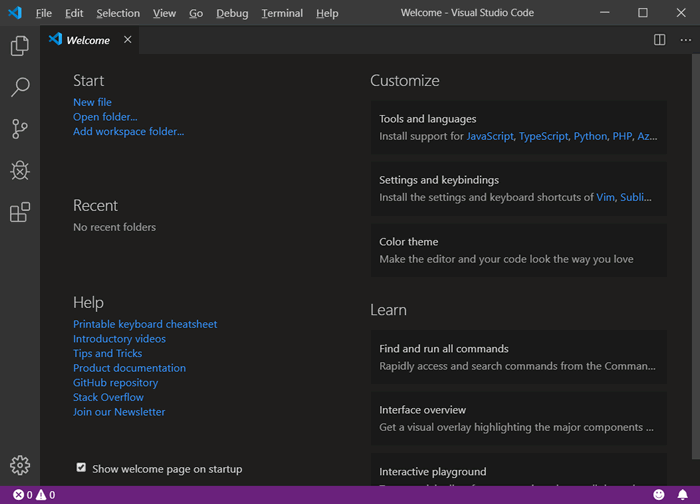
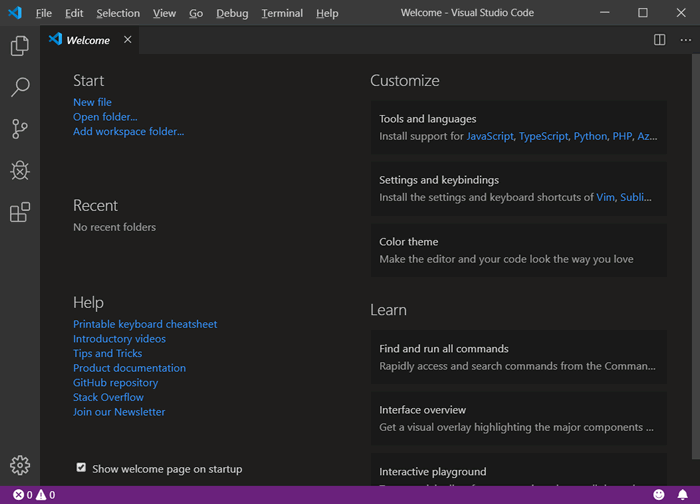

首页 > Python > Python编程环境搭建
Python IDE有哪些，哪款适合初学者？
百度搜索“Python IDE”会发现支持 Python 编程的 IDE 有很多，那么对于零基础的初学者，应该使用哪款 IDE 呢？
我个人推荐初学者使用 Python 自带的 IDLE。因为 IDLE 的使用方法很简单，非常适合初学者入门。本教程中使用的也是 Python 自带的 IDLE。
当然，除了 IDLE，还有很多其他的 IDE 供大家选择，这里列出常用的几个，喜欢探索的读者可自行安装使用。
PyCharm 具有语法高亮显示、Project（项目）管理代码跳转、智能提示、自动完成、调试、单元测试以及版本控制等一般开发工具都具有的功能，除此之外，它还支持 Django（Python 的 Web 开发框架）框架下进行 Web 开发。
PyCharm 的主窗口如图 1 所示。
图 1 PyCharm主窗口示意图
PyCharm 开发工具可通过其官方网站（http://www.jetbrains.com/pycharm/）下载获取。需要注意的是，该网站提供了 2 个版本，一个是社区版（免费并且提供源代码，适合多数读者），另一个是专业版（免费试用）。
PyDev 是一款功能强大的 Eclipse 插件，它可以提供语法高亮、语法分析、语法错误提示，以及大纲视图显示导入的类、库和函数、源代码内部的超链接、运行和调试等功能。
当 Eclipse 在安装 PyDev 插件后，就可以进行 Python 应用开发。其开发界面如图 2 所示。

图 2 Eclipse+PyDev 开发界面
除此之外，还有 PythonWin（只针对 Win32 平台）、MacPython IDE（PythonWin 对应的 Mac 版本）、Emacs 和 Vim（功能强大的文本编辑器，可以用来编写 Python 程序）等，都可以作为执行 Python 程序的 IDE。
VS Code 支持几乎所有主流开发语言的语法高亮、智能代码补全、自定义热键、括号匹配等功能，支持使用插件进行功能扩展，还针对网页开发和云端应用开发做了优化。
值得一提的是，使用 VS Code 编写 Python 代码，无需向其它编译器那样，通过创建项目来管理源代码文件，在 VS Code 中可以直接创建 Python 源代码文件。VS code 的开发界面如图 3 所示。

图 3 VS Code 开发界面
PTVS 插件是一个开源插件，它支持编辑、浏览、智能感知、混合 Python/C++ 调试、Djange 等，适用于 Windows、Linux 和 Mac OS 客户端的云计算。
当 VS 安装 PTVS 插件之后，就可以进行 Python 应用开发了，其开发界面如图 4 所示。
图 4 应用 VS 开发 Python 项目
我个人推荐初学者使用 Python 自带的 IDLE。因为 IDLE 的使用方法很简单，非常适合初学者入门。本教程中使用的也是 Python 自带的 IDLE。
当然，除了 IDLE，还有很多其他的 IDE 供大家选择，这里列出常用的几个，喜欢探索的读者可自行安装使用。
PyCharm
这是由 JetBrains 公司开发的一款 Python 开发工具，在 Windows、Mac OS 和 Linux 操作系统中都可以使用。PyCharm 具有语法高亮显示、Project（项目）管理代码跳转、智能提示、自动完成、调试、单元测试以及版本控制等一般开发工具都具有的功能，除此之外，它还支持 Django（Python 的 Web 开发框架）框架下进行 Web 开发。
PyCharm 的主窗口如图 1 所示。
图 1 PyCharm主窗口示意图
PyCharm 开发工具可通过其官方网站（http://www.jetbrains.com/pycharm/）下载获取。需要注意的是，该网站提供了 2 个版本，一个是社区版（免费并且提供源代码，适合多数读者），另一个是专业版（免费试用）。
有关 PyCharm 下载和安装，可阅读《PyCharm下载和安装教程》一节，至于如何使用 PyCharm 运行 Python 程序，可阅读《PyCharm运行Python程序》一节。
Eclipse+PyDev
Eclipse 是一个开源的、基于 Java 的可扩展开发平台，最初主要用于 Java 语言的开发。该平台可通过安装不同的插件，进行不同语言的开发。PyDev 是一款功能强大的 Eclipse 插件，它可以提供语法高亮、语法分析、语法错误提示，以及大纲视图显示导入的类、库和函数、源代码内部的超链接、运行和调试等功能。
当 Eclipse 在安装 PyDev 插件后，就可以进行 Python 应用开发。其开发界面如图 2 所示。
图 2 Eclipse+PyDev 开发界面
除此之外，还有 PythonWin（只针对 Win32 平台）、MacPython IDE（PythonWin 对应的 Mac 版本）、Emacs 和 Vim（功能强大的文本编辑器，可以用来编写 Python 程序）等，都可以作为执行 Python 程序的 IDE。
有关 Eclipse+PyDev 下载和安装，可阅读《Eclipse+PyDec下载和安装教程》一节，至于如何使用安装有 PyDev 插件的 Eclipse 编写并运行 Python 程序，可阅读《Eclipse+PyDec运行Python程序》一节。
Visual Studio Code
Visual Studio Code，简称 VS Code，是微软公司开发的一款轻量级 IDE。和 PyCharm 一样，它也支持在 Windows、Linux 和 macOS 平台上运行。VS Code 支持几乎所有主流开发语言的语法高亮、智能代码补全、自定义热键、括号匹配等功能，支持使用插件进行功能扩展，还针对网页开发和云端应用开发做了优化。
值得一提的是，使用 VS Code 编写 Python 代码，无需向其它编译器那样，通过创建项目来管理源代码文件，在 VS Code 中可以直接创建 Python 源代码文件。VS code 的开发界面如图 3 所示。

图 3 VS Code 开发界面
有关 VS Code 下载和安装，可阅读《VS Code下载和安装教程》一节，至于如何使用 VS Code 编写并运行 Python 程序，可阅读《VS Code运行Python程序》一节。
Microsoft Visual Studio
Microsoft Visual Studio，简称 VS，也是 Microsoft（微软）公司开发的一款 IDE。它可用于进行 C# 和 ASP.NET 等应用的开发，也可以作为 Python 的开发工具，只需要在安装时，选择安装 PTVS 插件即可。PTVS 插件是一个开源插件，它支持编辑、浏览、智能感知、混合 Python/C++ 调试、Djange 等，适用于 Windows、Linux 和 Mac OS 客户端的云计算。
当 VS 安装 PTVS 插件之后，就可以进行 Python 应用开发了，其开发界面如图 4 所示。
图 4 应用 VS 开发 Python 项目
有关 VS 下载和安装教程，可阅读《Visual Studio下载和安装教程》一节，至于如何使用 VS 编写并运行 Python 程序，可阅读《Visual Studio运行Python程序》一节。
关注公众号「站长严长生」，在手机上阅读所有教程，随时随地都能学习。内含一款搜索神器，免费下载全网书籍和视频。

微信扫码关注公众号